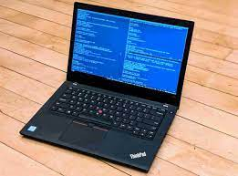

Linux, ¿El sistema operativo 2022?
Linux es uno de los sistemas operativos con más experiencia en años entre los principales OS actuales, lo cual beneficia su evolución y desarrollo. Esto se puede apreciar en su fácil uso, además de su ligereza y optimización de recursos. Vamos a ver sus carácteristicas y ver también algunos inconvenientes que posee.

Antes de ver sus características técnicas, cabe destacar que Linux no es un solo SO, sinó una familia de sistemas operativos con la misma base, que han sido personalizados y modificados en pequeñas variaciones. Esto es lo que se llama una "Distro".
Características técnicas
Desarrollador: Richard Stallman, Proyecto GNU y Linus Torvalds entre otros.
Núcleo: Kernel de Linux
Programado en: C y otros
Plataformas admitidas: DEC Alpha, ARM, AVR32, Blackfin, ETRAX CRIS, FR-V, H8/300, Itanium, M32R, m68k, Microblaze, MIPS, MN103, PA-RISC, PowerPC, s390, S+core, SuperH, SPARC, TILE64, Unicore32, x8 y Xtensa
Sistema de gestión de paquetes: APT, DNF, Pacman, ZYpp y más.
Licencia: GNU General Public License y otras
Ventajas e inconvenientes con respecto a otros OS
Muy seguro: Esto puede interpretarse como algo bueno o como algo malo, me explico. Por un lado, al poseer tantas capas de seguridad y actualizarlas al mínimo fallo, reduce mucho el riesgo de sufrir ataques hackers, pero también conlleva hacer determinados procesos y algunas acciones muy tediosas debido a las alta seguridad.
Pocos requerimientos: Linux en general, es un sistema muy ligero, lo que provoca que posea unos requerimientos muy reducidos.
Dependencia intrínseca de la línea de comandos: Aunque sí es cierto que posee una interfaz gráfica para la mayoría de procesos cotidianos, sigue existiendo cierta dependencia de la línea de comandos o terminal, al ser determinados procesos únicamente realizables desde tal lugar.
Escaso mercado de programas: Posee menor cantidad de programas compatibles con él que con otros, como por ejemplo, Windows. Esto se debe principalmente a que el mayor mercado está en este último, quizás debido a cuestiones de facilidad de desarrollo por, entre otras cosas, las cuestiones de seguridad anteriormente mencionadas.
Deficientes gráficos: Aunque esto no repercute en la mayoría de los usuarios, es cierto que Linux cuenta con unas cualidades gráficas y de resolución que dejan bastante que desear con respecto a su principal competidor, Windows.
Gratis: Aunque es cierto que existen algunas versiones de pago, la gran mayoría son totalmente gratuitas y de código abierto.

Lo que debes saber antes de decidirte por Linux
Como ya mencionamos antes, Linux posee diferentes versiones, modificaciones, del sistema operativo. Es extremadamente importante saber cual es la mejor para ti. Para ello, dejamos aquí un pequeño tutorial al respecto.